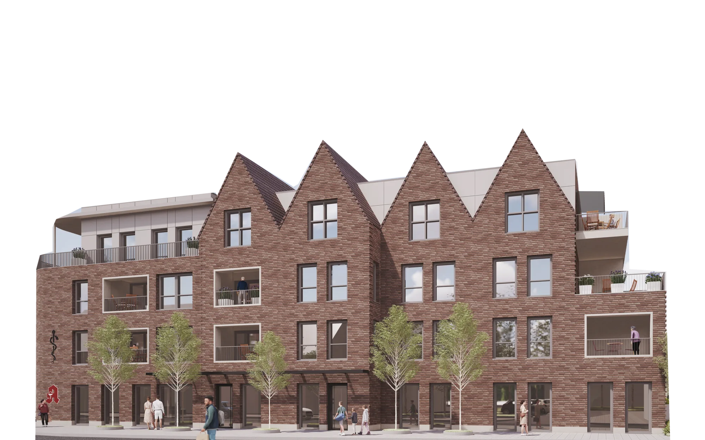

Wettringener Straße 2
Sprechzeiten siehe unten
Mo, Di, Do 7:30 bis 12 und 14 bis 17 Uhr
Mi, Fr 7:30 bis 12 Uhr

Sechs Ärztinnen und Ärzte, ein Team, für alle Anliegen in Metelen.
Von der Kindervorsorge bis zur Palliativmedizin, von der Grippeimpfung bis zum Check-up. Eine Praxis, heute an zwei Standorten in Metelen, ab 2027 gemeinsam im Neuen Postquartier.
Visualisierung des neuen Praxisgebäudes, kein Foto. Quelle: Maletz & Hoffstedde.
Alles geht online, rund um die Uhr. Die Anleitungen führen Sie Schritt für Schritt zum Kalender oder Formular Ihres Standorts.
Sprechzeiten siehe unten
Mo, Di, Do 7:30 bis 12 und 14 bis 17 Uhr
Mi, Fr 7:30 bis 12 Uhr
Sprechzeiten siehe unten
Mo, Di, Do 7:30 bis 12 und 15 bis 18 Uhr
Mi, Fr 7:30 bis 13 Uhr
Allgemeinmedizin und Innere Medizin, Vorsorge und Impfungen, Kinder, Herz und Kreislauf, Rücken und Gelenke, Begleitung am Lebensende. Alle Leistungen
 Vorsorge und Check-upGesundheitscheck, Hautkrebsscreening, Krebsvorsorge, Hausarztprogramm
Vorsorge und Check-upGesundheitscheck, Hautkrebsscreening, Krebsvorsorge, Hausarztprogramm ImpfungenGrippe und Corona, Auffrischungen, Empfehlungen des RKI
ImpfungenGrippe und Corona, Auffrischungen, Empfehlungen des RKI Kinder und JugendlicheVorsorgen U2 bis U11, Jugenduntersuchung, Impfungen
Kinder und JugendlicheVorsorgen U2 bis U11, Jugenduntersuchung, ImpfungenFotos mit „Beispielbild“ zeigen nicht die Praxis.
Sechs Hausärztinnen und Hausärzte, dazu 17 Mitarbeitende an der Anmeldung, im Labor und in der Pflege. Das ganze Team
 Dr. Hedwig NiehoffAllgemeinmedizin, PalliativmedizinSchilden
Dr. Hedwig NiehoffAllgemeinmedizin, PalliativmedizinSchilden Dr. Andrea ViermannAllgemeinmedizin, ChirotherapieSchilden
Dr. Andrea ViermannAllgemeinmedizin, ChirotherapieSchilden Michael NiesenAllgemeinmedizin, Chirotherapie, SportmedizinSchilden
Michael NiesenAllgemeinmedizin, Chirotherapie, SportmedizinSchildenE-Rezepte sind am nächsten Werktag in Ihrer Apotheke abrufbar, am Schilden innerhalb von 24 Stunden. Einmal im Quartal muss Ihre Versichertenkarte eingelesen sein.
Wettringener Straße: Montag bis Freitag 8:30 bis 12 Uhr, Montag, Dienstag und Donnerstag 15 bis 17 Uhr. Schilden: 02556 278.
Ja, mit einer Bevollmächtigungskarte. Sie bekommen sie in der Praxis oder zum Ausdrucken. Das gilt auch für Ehepartner, nicht für Erziehungsberechtigte und rechtliche Betreuer.
Sie geht elektronisch an Ihre Krankenkasse, Sie sehen sie in deren App. Eine SMS gibt es nicht mehr. Bei milden Infekten ist am Schilden eine telefonische Krankschreibung möglich.
An der Wettringener Straße ja, Grippe und Corona über die Sonderimpftage. Am Schilden nein, bringen Sie Impfausweis und Versichertenkarte mit. Reiseimpfungen bitte telefonisch absprechen.
Direkt per EC-Karte. Überweisungen und Kreditkarten sind nicht möglich.

Visualisierung, kein Foto. Quelle: Maletz & Hoffstedde.
Seit dem 01.01.2026 sind wir eine Praxis: sechs Ärztinnen und Ärzte an zwei Standorten in Metelen, an der Wettringener Straße und am Schilden. 2027 ziehen wir gemeinsam in das Neue Postquartier im Ortskern. Bis dahin finden Sie Ihre Ärztin oder Ihren Arzt am gewohnten Ort.
Das bietet Ihnen das Hausarztprogramm, dazu mehr Labordiagnostik. Die Einschreibung ist kostenlos. Mehr dazu
Beim nächsten Besuch ansprechen lassenAb sofort, in einem Team aus 23 Menschen, ab 2027 im Neubau. Lernen Sie uns bei einem Probearbeitstag kennen.
Jetzt bewerben Bewerbung als MFA oder zur Ausbildung